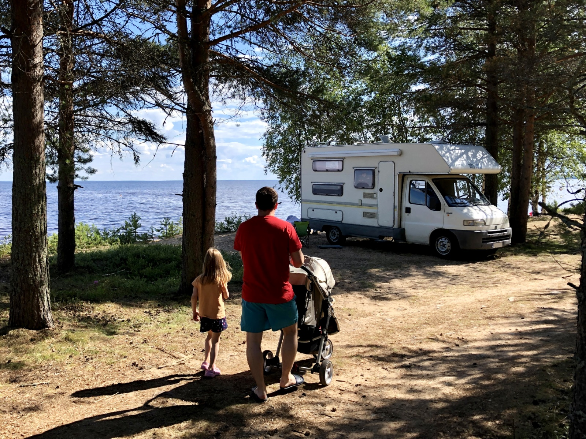

Rollen loki
Tämän blogin päähenkilö on asuntoautomme Fiat Ducato Autoroller – tuttavallisemmin Rolle. Se on hieman rämisevä mutta värikäs vanha sielu, joka silloin tällöin hyytyy tielle – aivan kuten omistajansakin. Rollen miehistöön kuuluvat ruuhkavuosia elävät vanhemmat, utelias pieni koululainen ja matkapahoinvoinnistaan huolimatta iloinen taapero.
Lokikirja tarkoittaa alun perin laivoilla pidettävää merilain mukaista matkapäiväkirjaa. Olen ollut lapsesta asti kova tyttö kirjoittamaan erilaisia päiväkirjoja, ja muistojen taltiointi sanoina vihkoihin on muodostunut minulle elämäntavaksi. Lapsuuden mökki-iltojen kuiskuttelut isoäidin kanssa on kirjattu tarkasti muistioiksi, ja nuoruusvuosien tyttöjen reissut taltioitu lukuisiin lokikirjoihin. Kun asuntoautohaaveemme toteutui vuonna 2010, oli itsestään selvää, että myös uusi liikkuva kotimme saa oman lokikirjan.
Rollen ensimmäinen lokikirja oli hansikaslokeroon säilötty ruutuvihko. Rakastan käsin kirjoittamista, ja erityisesti lomamatkoilla välttelen älypuhelimen käyttöä. Vihkoa ja matkakuvia selaillessa alkoi kuitenkin tuntua, että ihanat muistot pitäisi taltioida myös kestävämpään muotoon. Kotimaan matkailun kasvattaessa suosiotaan huomasin, että moni lapsiperhe pohtii nyt samoja kysymyksiä, joita me ratkoimme asuntoautoelämää aloittaessamme. Blogi tuntui luontevalta tavalta tallettaa omat matkamuistot, ja kenties samalla jakaa karavaanarielämän innostusta ja vinkkejä muillekin. Blogin kirjoittaminen on myös oiva tapa purkaa matkakuumetta sillä välin, kun Rolle nukkuu talviunta kausisäilössään. Niin Rollen ruutuvihkolokista tulikin blogi.
Asuntoautoelämässä olemme halunneet hieman kapinoida nykyaikaa vastaan tekemällä nostalgiahypyn aikaan, jolloin asioita ei voinut suunnitella älypuhelin kourassa, vaan tie sai viedä ja yllättää. Reissut antavatkin elämään ripauksen spontaaniutta, seikkailun tuntua ja kontrollista irrottamista. Koskaan ei tiedä mitä seuraavan mutkan takaa löytyy, joten matkoilla koetaan tunteiden kirjoa ilosta rauhaan ja pitkän pinnan harjoituksiin.
Haluamme välttää siloteltua ulosantia, jotta blogi voi toimia myös vertaistukena lapsiperheille silloin, kun tiet ovat töyssyisiä ja penkit sotkussa. Rollen loki tarjoaakin lukijoilleen aitoa reissussa rähjääntymistä ilman ilmastointia tai filttereitä. Tervetuloa mukaan matkalle!